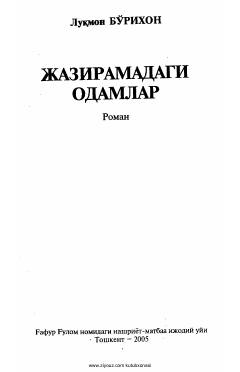

JOCho'lquvarlarning hayoti va murakkab taqdirlari tasvirlangan ta'sirli roman.
Roman ovloq cho'l qo'ynidagi cho'lquvarlarning hayotiy kechinmalari haqida hikoya qiladi. Asarning bosh qahramoni Lolaxonning achchiq qismati, sevgi-sadoqat, xiyonat va nafrat kabi tuyg'ular yozuvchiga xos mahorat bilan tasvirlangan.